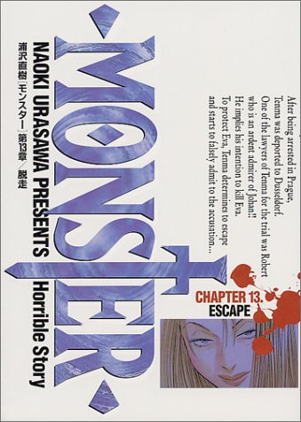
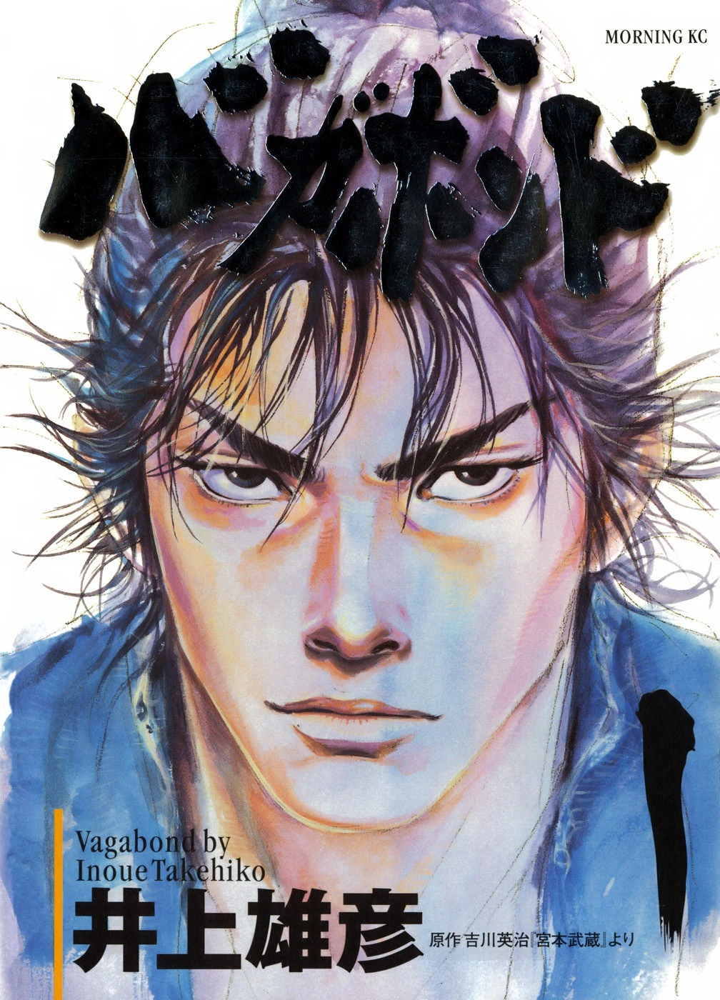
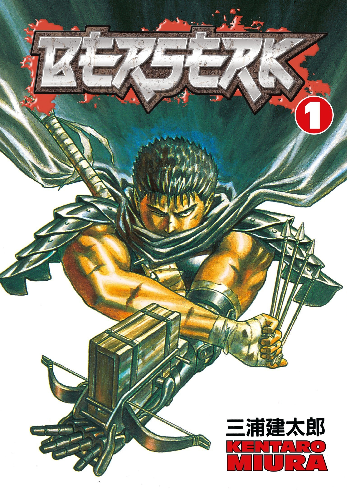

One Piece:

One Piece is a Japanese manga series written and illustrated by Eiichiro Oda. It has been serialized in Shueisha's shōnen manga magazine Weekly Shōnen Jump since July 1997, with its individual chapters compiled into 104 tankōbon volumes as of November 2022. The story follows the adventures of Monkey D. Luffy, a boy whose body gained the properties of rubber after unintentionally eating a Devil Fruit. With his pirate crew, the Straw Hat Pirates, Luffy explores the Grand Line in search of the deceased King of the Pirates Gol D. Roger's ultimate treasure known as the "One Piece" in order to become the next King of the Pirates.
Monster
Monster is a Japanese manga series written and illustrated by Naoki Urasawa. It was published by Shogakukan in their seinen manga magazine Big Comic Original between 1994 and 2001, with the chapters collected in eighteen tankōbon volumes. The story revolves around Kenzo Tenma, a Japanese surgeon living in Düsseldorf, Germany whose life enters turmoil after getting himself involved with Johan Liebert, one of his former patients, who is revealed to be a dangerous serial killer.
Vagabond
Vagabond is a Japanese epic martial arts manga series written and illustrated by Takehiko Inoue. It portrays a fictionalized account of the life of Japanese swordsman Musashi Miyamoto, based on Eiji Yoshikawa's novel Musashi. It has been serialized in Kodansha's seinen manga magazine Morning since September 1998, with its chapters collected into thirty-seven tankōbon volumes as of July 2014.
Berserk:
Berserk is a Japanese manga series written and illustrated by Kentaro Miura. Set in a medieval Europe-inspired dark fantasy world, the story centers on the characters of Guts, a lone swordsman, and Griffith, the leader of a mercenary band called the "Band of the Hawk". Miura premiered a prototype of Berserk in 1988. The series began the following year in the Hakusensha's now-defunct magazine Monthly Animal House, which was replaced in 1992 by the semimonthly magazine Young Animal, where Berserk has continued its publication.